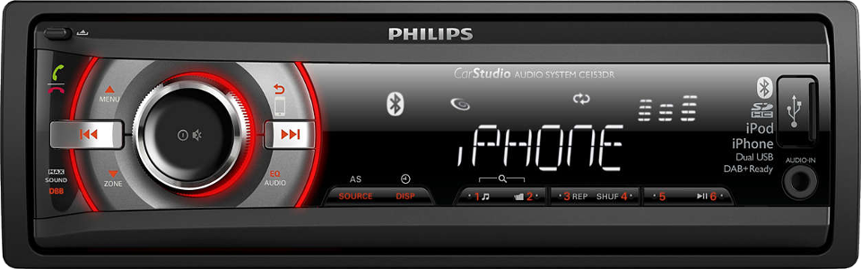
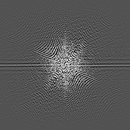
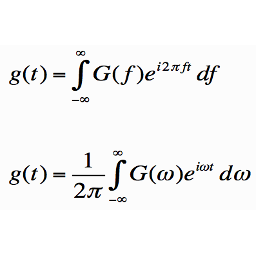
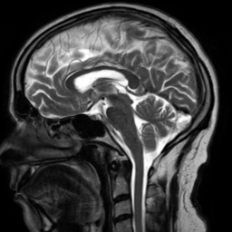

Introduction
Understanding K-space starts with understanding your car audio displaying a frequency spectrum while music is being played. The car stereo evaluates the audio signal and somehow extracts information about the frequencies from it.

The audio signal is a variation of signal over time. If the signal varies more rapidly over time, the frequency of the tone is higher.
If two tones are played at the same time, the signals are added together. The more tones are played at the same time, the more difficult it becomes to recognize the frequency of each tone.
Fourier Transformation
Without going into too much detail... The process of analyzing an audio signal and extracting the frequencies and amplitudes of all tones in the music is done using a Fourier Transform. By analyzing a short fragment of the audio data a Fourier Transform produces a graph that shows for each frequency its contribution in the analyzed audio signal.
Information that was in the time domain is now converted to the frequency domain. The algorithm computers use to perform this transformation is called FFT (Fast Fourier Transformation). Applying the similar transformation again to the frequency data reverts back the original audio signal.
FFT in MRI
In MRI scanners, for each row in an image a FFT is required to transform the signal from the time domain (as picked up by the coil) to the frequency domain. And then another FFT is required for each column to decode the phase information as well. This process is referred to as a two-dimensional FFT or 2D-FFT.



Image at the left represents K-space. Using a 2D-FFT transform the image at the right can be reconstructed from the data.
The matrix that holds the data as it is recorded from the MRI scanner is known as the K-space. In most cases a single line of data is acquired every repetition time. A scan completes when all lines required have been measured.
Artifacts
Many of the artifacts that occur in MRI images can be explained as a result from this 2D-FFT. If information in the K-space is somehow inconsistent, this will result in typical MRI artifacts such as: blurring, ringing, motion, etc.
Further information
There are many websites where K-space is explained in all detail. Some sites that I found particularly useful during the development of this app include:
www.revisemri.com
www.mriquestions.com